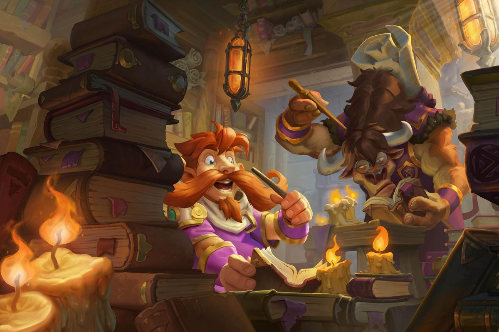

Set within the Warcraft universe, Hearthstone is a digital-only, turn-based collectible card game which pits two opponents against each other. Players select a hero from one of ten classes. All classes have unique cards and abilities, known as hero powers, which help define class archetypes. Each player uses a deck of cards from their collection with the end goal being to reduce the opponent's health to zero.
There are five different types of cards: minions, spells, weapons, hero cards and locations. Quests are a specific type of spell only found in three expansions. These cards are ordered by rarity, with Legendary cards being the rarest, followed by Epic, Rare, Common, and Basic. Blizzard releases expansions of additional cards every four months, as well as smaller mini-sets between expansions, to increase the variety in the metagame. The game uses a freemium model of revenue, meaning players can play for free or pay to acquire additional card packs or content.

Unlike other card games such as Magic: The Gathering, Hearthstone was designed to speed up play by eliminating any manual reactions from the opposing player during a player's turn, and setting a timer for each player's turn. During a turn, players play cards from their hand using "mana", a budget each player must abide by which increases by one each turn with a maximum of ten, and with cards having various mana costs.[4] This invokes strategy as the player must plan ahead, taking into account what cards can and cannot be played. Minions and spells are unique.
Minions will be placed directly onto the board after being played and may carry special effects like Charge or Deathrattle, allowing the minion to attack instantly or making the minion do something special upon death, respectively. Spells have distinctive effects and affect the board in various ways.
Cards can be obtained through opening card packs or by crafting them with arcane dust.